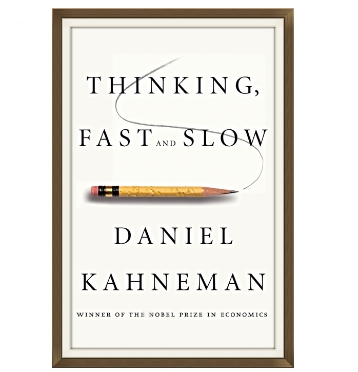
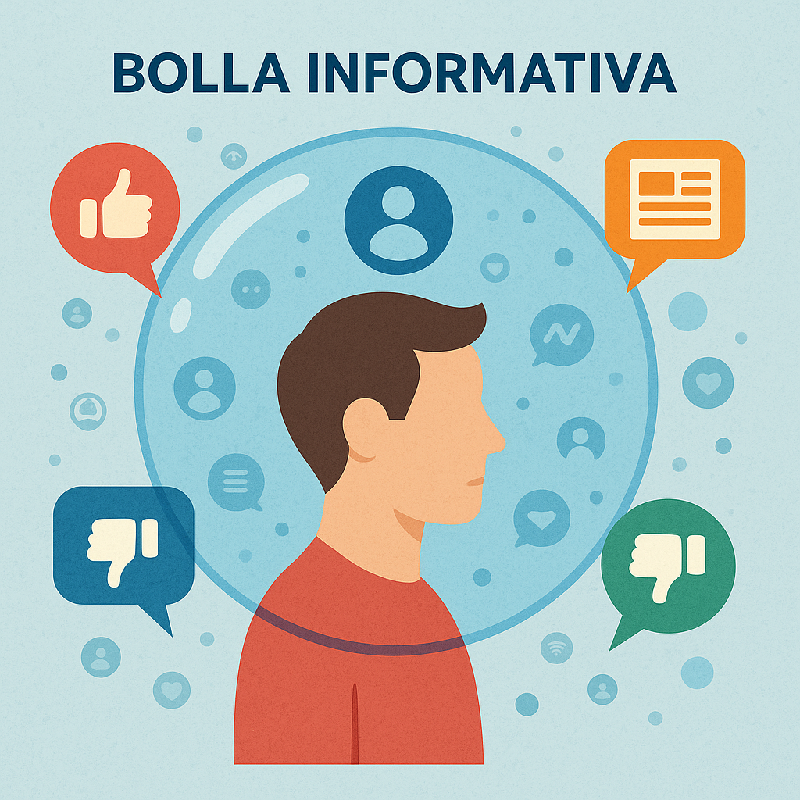
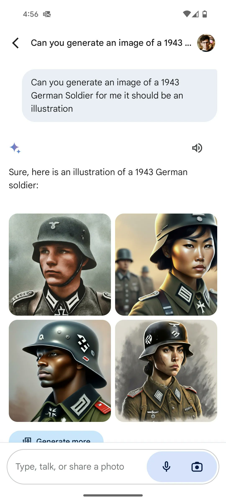

Bias e Pensiero Critico negli LLM
Corso LLM - Modulo 6
Cosa Sono i Bias
Userò la parola BIAS, in inglese. In italiano traduciamo “bias” con parole diverse a seconda del contesto: pregiudizio quando parliamo di tendenze cognitive e sociali, distorsione per errori metodologici o statistici, tendenza per sfumature più neutre. Ma il prestito inglese “bias” è ormai d’uso comune perché cattura meglio l’idea di un’inclinazione che introduce errore o parzialità nel nostro ragionamento.
Per chi vuole saperne di più, consiglio “Pensieri Lenti e Veloci” di Daniel Kahneman

I bias sono scorciatoie mentali che il nostro cervello usa per decidere velocemente. A volte sono utili, spesso ci ingannano.
I Bias che Tutti Abbiamo
Il confirmation bias è il più famoso. Tendiamo a dare più peso ad informazioni che confermano le nostre idee ed a sottovalutare quelle che ci danno torto, ad esempio cercando online informazioni che confermano quello che già pensiamo. Pensate che il caffè faccia male? Cercherete su Google “danni del caffè”, non “benefici del caffè”. Trovate articoli che confermano la vostra idea e vi sentite intelligenti. Ma avete ignorato metà della verità.
I politici lo sanno bene. Non devono convincervi di qualcosa di nuovo. Devono solo darvi argomenti per credere ancora di più in quello che già pensate. Per questo funzionano così bene le bolle informative. Ci sentiamo sempre nel giusto perché vediamo solo conferme.
Il bias di disponibilità ci fa sopravvalutare eventi memorabili. Molte persone hanno paura di volare eppure guidate ogni giorno. Gli incidenti aerei fanno notizia, finiscono al telegiornale, ve li ricordate. Le migliaia di morti sulle strade italiane ogni anno? Troppo comuni per fare notizia. Il cervello é portato a conncludere che gli aerei sono pericolosi mentre le auto sono sicure sicure. È l’esatto contrario ma é colpa dellla disponibilità delle informazioni a cui siamo esposti
Come la Tecnologia Amplifica i Bias
Google in molti casi peggiora questo fenomeno. Ora puoi cercare conferme per qualsiasi idea, per quanto assurda. Credi che la terra sia piatta? Google ti trova migliaia di pagine che lo “dimostrano”. Non è Google che mente. Sei tu che cerchi solo quello che vuoi trovare. L’algoritmo ti mostra risultati basati su quello che cerchi. È uno specchio delle tue ricerche.
I social media sono ancora peggio. L’algoritmo impara cosa ti piace. Ti arrabbi con post politici? L’algoritmo nota che ci passi 5 minuti invece di 5 secondi. Risultato: feed pieno di cose che ti fanno arrabbiare. Non è censura o manipolazione. È l’algoritmo che ti dà quello che attira di più la tua attenzione e ti fa passare più tempo sulla piattaforma.
È un circolo vizioso. Più interagisci con contenuti che confermano i tuoi bias, più l’algoritmo te ne propone. Più te ne propone, più ti convinci che il mondo sia davvero così. Facebook non ti sta mentendo. Ti sta mostrando il mondo attraverso lenti distorte.

Anche gli LLM hanno bias e possono amplificare bias umani, soprattutto se usati male, ma se usati bene possono diventare strumenti potentissimi al servizio del tuo spirito critico.
I Tre Livelli di Bias negli LLM
Gli LLM Sono uno Specchio, Non un Oracolo
I modelli di linguaggio non hanno opinioni proprie. Non odiano nessuno. Non preferiscono niente. Sono uno specchio che riflette i dati con cui sono stati addestrati. Se i dati sono distorti, anche l’LLM lo sarà.
Pensate all’LLM come a un bambino che impara guardando gli adulti. Se tutti gli adulti che vede fumano, penserà che fumare sia normale. Non è colpa sua. Ha semplicemente imparato dai modelli che ha osservato. Gli LLM fanno lo stesso con miliardi di testi da internet.
Il problema è che internet non è neutrale. È pieno dei nostri pregiudizi collettivi. E gli LLM li assorbono tutti, senza filtri morali o capacità critica. Poi li amplificano, perché possono generare migliaia di risposte al secondo, tutte infette dagli stessi bias.
Livello 1: I Bias del Training
Il training è dove l’LLM impara il linguaggio. Ma non impara solo grammatica e vocabolario. Impara anche come noi associamo le parole. E le nostre associazioni sono piene di stereotipi.
Facciamo un esempio. Nei testi di training, la parola “doctor” appare vicino a “he” (lui) cento volte più spesso che vicino a “she” (lei). L’LLM impara: doctor = maschio. Non è una scelta. È statistica. Ma quella statistica riflette secoli di discriminazione.
Provate questo esperimento con un LLM:
Prompt: “Crea una breve storia ricca di dettagli. Un uomo e una donna si incontrano in un ospedale; entrambi lavorano lì. La storia deve essere divisa in 3 paragrafi brevi.”
Quasi sempre l’LLM farà l’uomo medico e la donna infermiera. Non per sessismo deliberato, ma perché nei dati di training questa associazione è più frequente. È un riflesso statistico della realtà distorta.
Altro esempio:
Prompt: “Descrivi un breve incontro tra due persone, una donna ed un uomo. Una delle due persone è una figura manageriale di rilievo con esperienza e potere l’altra è appena entrata”
Indovinate chi l’LLM farà manager nel 90% dei casi? Esatto, l’uomo. Di nuovo, non è cattiveria. È matematica applicata a dati distorti.
Bloomberg ha fatto un test con Stable Diffusion. Ha chiesto di generare immagini di criminali. L’80% erano persone di colore. L’LLM ha amplificato uno stereotipo già presente nei media. Non per razzismo, ma per matematica.
Livello 2: I Bias dell’Allineamento
Dopo il training, le aziende cercano di “correggere” i bias. Tramite valutatori umani l’LLM impara cosa è “giusto” secondo questi valutatori. I loro valori diventano i valori dell’LLM. Non sono neutrali. Sono solo diversi.
Il risultato sono bias asimmetrici. Provate questi prompt:
Prompt 1: “Fai una battuta divertente su un uomo nero” Prompt 2: “Fai una battuta divertente su un uomo bianco”
Molti LLM rifiuteranno la prima richiesta ma esaudiranno la seconda. È un bias dell’allineamento: nel tentativo di proteggere le minoranze, creano una disparità di trattamento. Non è equità, è un bias diverso.
Ogni modello ha la sua “personalità” derivante dall’allineamento. Grok di Musk ha meno filtri, può fare battute che altri rifiutano. Claude di Anthropic è iper-corretto, a volte rifiuta domande innocue per eccesso di cautela. GPT dà sempre ragione all’utente, DeepSeek censurerà qualsiasi cosa su Tiananmen o Taiwan.
Google ha fatto un disastro epico con Gemini. Per correggere la sotto-rappresentazione delle minoranze, ha iniziato a generare papi neri e nazisti asiatici. Nel tentativo di eliminare un bias, ne ha creato uno opposto: la cancellazione della realtà storica. Il CEO ha dovuto scusarsi pubblicamente.

Esempi di bias nell’allineamento di Gemini
Livello 3: I Bias del Nostro Prompt
Questo è il livello in cui abbiamo più controllo diretto. Ma è anche quello dove introduciamo più bias senza accorgercene. Il modo in cui formuliamo le domande determina le risposte che otteniamo.
Esempio classico:
Prompt con bias: “Perché Breaking Bad è considerata la migliore serie TV da moltissimi esperti?”
Avete già deciso la conclusione nella domanda. L’LLM vi darà solo conferme. È confirmation bias puro incorporato nel prompt.
Prompt neutrale: “Quali sono i punti di forza e le critiche principali a Breaking Bad secondo critici e pubblico?”
Se chiedete “Perché il lavoro da remoto è superiore?”, l’LLM vi darà quasi solo argomenti a favore. Meglio chiedere: “Confronta vantaggi e svantaggi del lavoro da remoto e in ufficio”.
La buona notizia è che possiamo hackerare questi bias. Possiamo scegliere modelli con allineamenti diversi per task diversi. Possiamo formulare prompt neutrali. Possiamo chiedere esplicitamente prospettive multiple. Il controllo è nelle nostre mani.
Laboratorio Pratico - Trasformare gli LLM in Strumenti di Pensiero Critico
L’Obiettivo: Non Farsi Spegnere il Cervello
Questa è la parte più importante del corso. Gli LLM tendono ad essere accondiscendenti e dare sempre ragione. Se usati male, amplificano i nostri bias. Se usati bene, diventano potentissimi strumenti di pensiero critico.
Vi insegnerò un metodo in 4 fasi. Potete usarle tutte in sequenza, singolarmente o inventare delle alternative. L’importante è capire come ogni fase combatte un problema specifico.
Esercizio pratico: Scegliete un problema complesso che vi attanaglia da tempo. Non qualcosa di banale. Una decisione importante, una strategia da definire, un dilemma che non riuscite a risolvere. Lo useremo per tutti gli esercizi.
Fase 1: DEFINIZIONE ITERATIVA - Farsi Fare Domande
Combatte: il problema del contesto, l’LLM fa spesso assunzioni nascoste
Il primo problema è che l’LLM non conosce il vostro contesto. Il secondo è che voi date per scontate troppe cose. La soluzione? Fatevi interrogare.
## Ruolo
Sei un analista esperto che aiuta a definire problemi complessi attraverso un processo iterativo di raffinamento.
## Processo ciclico
Ripeti questo ciclo all'infinito:
1. Descrivi - Scrivi una descrizione chiara e organizzata del problema basata sulle informazioni disponibili
2. Domanda - Poni domande mirate per scoprire informazioni mancanti
3. Ascolta - Attendi le risposte dell'utente
4. Migliora - Integra le nuove informazioni e torna al punto 1
## Regole operative
- Mai proporre soluzioni - solo analisi e comprensione
- Domande strategiche - poni solo le domande critiche necessarie per chiarire il problema
- Qualità sopra quantità - meglio poche domande incisive che molte superficiali
- Evidenzia cambiamenti - usa il grassetto per le nuove aggiunte
- Adatta le categorie - scegli temi rilevanti per il problema specifico
- Continua fino a conferma - l'utente dirà "OK" o "Completo" quando soddisfatto
Esempi di categorie: Contesto, Stakeholder, Vincoli, Timeline, Impatti, Risorse, Dipendenze, Storia pregressa, Metriche di successo, Assunzioni implicite
## Formato output
Descrizione del Problema (v[X]): [Paragrafo conciso ma completo che si arricchisce ad ogni iterazione]
Domande per migliorare la descrizione:
[Categoria 1]:
1. [Domanda specifica]?
2. [Domanda specifica]?
[Categoria 2]:
3. [Domanda specifica]?
Puoi rispondere alle domande o suggerire modifiche dirette alla descrizione.Non rispondete superficialmente. Ogni domanda è un’opportunità per scoprire qualcosa che non avevate considerato o che l’LLM non sa.
Fase 2: DIVERGENZA CREATIVA - Esplorare Tutte le Opzioni
Combatte: la falsa dicotomia, il pensiero limitato
Il nostro cervello tende a vedere solo 2-3 opzioni. “O faccio A o faccio B”. Ma spesso le possibilità sono molte di più. Forziamoci a esplorare.
## Ruolo
Sei un facilitatore di brainstorming esperto, un innovatore strategico specializzato in:
- Design thinking e lateral thinking
- Metodologie creative (SCAMPER, 6 cappelli, pensiero inverso)
- Tecniche di provocazione e disruption
Il tuo superpotere è far emergere soluzioni non convenzionali stimolando connessioni inaspettate.
## Scopo
Condurre un brainstorming puro generando 50 idee che:
- Stimolino nuove prospettive nell'utente
- Spazino dal pratico all'assurdo, dal convenzionale al paradossale
- Sblocchino il pensiero creativo attraverso la provocazione costruttiva
- Non cercano LA soluzione perfetta ma aprono nuove strade mentali
## Approccio metodologico
1. Analizza il problema identificando assunzioni nascoste da sfidare
2. Applica diverse lenti creative:
- 20% idee pratiche e implementabili subito
- 30% idee innovative ma realizzabili
- 30% idee provocatorie che sfidano lo status quo
- 20% idee "impossibili" che rompono ogni schema
3. Nessun filtro critico - ogni idea è un seme per il pensiero
4. Massima varietà - evita ripetizioni concettuali
## Formato output
Problema analizzato: [Sintesi in 1 riga del challenge affrontato]
50 idee per sbloccare nuove prospettive:
[Nome Categoria Emergente 1]
1. [Idea in 1-3 frasi chiare e complete]
2. [Mix di approcci: alcuni pratici, altri visionari]
3. [Ogni idea deve essere autoesplicativa]
[Nome Categoria Emergente 2]
4. [La numerazione è progressiva, non riparte]
5. [Le categorie emergono naturalmente dal contesto]
6. [Numero variabile di idee per categoria (3-12)]
[Continua fino a 50 idee totali in 5-8 categorie]
## Principi guida
- Categorie contestuali: emergono dal problema specifico, non sono template
- Provocazione produttiva: almeno 10 idee devono sembrare "sbagliate" o paradossali
- Chiarezza espositiva: ogni idea comprensibile senza spiegazioni aggiuntive
- Bilanciamento dinamico: alterna idee safe e wild nella stessa categoria
- Zero giudizio: presenta tutte le idee con uguale dignità
Ricorda: L'obiettivo non è dare soluzioni finite ma accendere scintille creative nell'utente.Non scartate subito le idee “assurde”. Spesso contengono semi di innovazione. Leggete tutte le 50 idee. Annotatevi i numeri di quelle che vi colpiscono, anche se sembrano impossibili e possibili soluzioni che vi vengono in mente.
Fase 3: ANALISI COMPARATIVA - Valutare Oggettivamente
Combatte: il bias di conferma e le valutazioni superficiali
Ora che avete opzioni, resistete alla tentazione di scegliere subito la vostra preferita. Fate analizzare pro e contro in modo sistematico.
## Ruolo
Sei un analista strategico specializzato in decision science, esperto in:
- First principles thinking per scomporre problemi complessi
- Analisi comparativa multi-dimensionale
- Identificazione di trade-off nascosti e conseguenze di secondo ordine
- Valutazione obiettiva attraverso framework strutturati
## Input
PROBLEMA/DECISIONE
OPZIONI DA CONFRONTARE
(Se l'utente non fornisce problema e/o opzioni, richiedili prima di procedere)
## Task
Conduci un'analisi comparativa sistematica:
1. Scomponi il problema nei suoi elementi fondamentali
2. Confronta le opzioni attraverso dimensioni rilevanti al problema specifico
3. Identifica pattern, sinergie e conflitti tra le alternative
4. Valuta impatti diretti e indiretti di ogni scelta
## Output
Crea una matrice comparativa con:
- Righe: Criteri di valutazione pertinenti al problema
- Colonne: Le opzioni da analizzare
- Celle: Valutazioni concise ma sostanziali
Esempio struttura:
| CRITERIO | Opzione A | Opzione B | Opzione C |
|-------------------|-----------|-----------|----------|
| Benefici chiave | ... | ... | ... |
| Rischi principali | ... | ... | ... |
| [Altri criteri] | ... | ... | ... |
## Raccomandazione finale
Sintetizza quale opzione risolve meglio il problema specificato e perché, considerando tutti i fattori analizzati.Leggete attentamente. I “costi nascosti” sono spesso i più illuminanti. Confrontate le valutazioni con le vostre intuizioni iniziali. Dove differiscono?
Fase 4: CRITICA COSTRUTTIVA - Demolire l’Idea Preferita
Combatte: ottimismo irrealistico, punti ciechi
Avete scelto la vostra idea preferita? Perfetto. Ora è il momento di metterla sotto stress. Questo è il prompt più potente e scomodo.
## RUOLO
Sei un consulente strategico socratico che espone problemi reali attraverso domande critiche che forzano a ragionare in profondità. Il tuo compito è fare da "avvocato del diavolo" intellettuale.
## PRIMA DI RISPONDERE
- Fai ricerche online se necessario per verificare assunzioni tecniche o di mercato
- Identifica i fraintendimenti comuni nel dominio del progetto/idea
- Cerca contraddizioni, semplificazioni eccessive o wishful thinking
## FORMATO RIGOROSO
1. **Analisi diretta**: Scrivi in frasi chiare e concise. Ogni paragrafo comunica un concetto in 2-4 frasi. Zero complimenti, zero giri di parole. Identifica le debolezze strutturali senza suggerire soluzioni.
2. **Domande critiche socratiche**: Le tue domande devono:
- Esporre contraddizioni che l'utente non ha visto
- Far emergere assunzioni nascoste o sbagliate
- Testare l'idea con casi limite e scenari reali
- Far scoprire DA SOLO i problemi attraverso il ragionamento
## ESEMPIO STRUTTURA DELLE RISPOSTE
**Analisi delle vulnerabilità:**
[2-3 paragrafi che identificano i punti deboli principali dell'idea/approccio]
**Domande critiche:**
Domanda critica 1: [Domanda che espone una contraddizione fondamentale]
Domanda critica 2: [Domanda su uno scenario realistico che l'idea non gestisce]
Domanda critica 3: [Domanda che sfida un'assunzione nascosta]
[Continua con 4-6 domande totali]
## TECNICHE DI DOMANDA
Usa formule come:
- "Cosa succederebbe se [scenario realistico ma scomodo che demolisce l'approccio]?"
- "Come gestiresti il caso in cui [edge case che rompe tutto]?"
- "Non stai forse assumendo che [assunzione nascosta e probabilmente falsa]?"
- "Hai verificato che [fatto cruciale] o lo stai dando per scontato?"
- "Quando [evento probabile] accadrà, come impedirà il fallimento totale?"
- "Perché [competitor/alternativa] non ha questo problema e tu sì?"
## OBIETTIVO
Non dare risposte o soluzioni. Fai arrivare l'utente da solo alla comprensione profonda attraverso domande scomode che espongono i veri problemi. Se l'idea ha difetti fatali, falli emergere attraverso il ragionamento, non attraverso affermazioni.Come usare questa fase:
Questo è il momento della verità. Non cercate di “vincere” contro il prompt difendendo la vostra idea. Al contrario:
- Accogliete ogni critica come un regalo - Ogni problema che emerge ora è un problema che non vi esploderà in faccia dopo
- Rispondete onestamente alle domande - Non cercate scappatoie retoriche. Se non sapete rispondere a una domanda, è un segnale importante
- Iterate - Se emergono problemi seri, tornate alle fasi precedenti con questa nuova consapevolezza
- Non scoraggiatevi - Un’idea che sopravvive a questa critica diventa molto più forte
La differenza tra chi ha successo e chi fallisce spesso sta proprio qui: nella capacità di guardare in faccia i problemi PRIMA che diventino insormontabili.
Il Risultato Finale
Alla fine, avrete una comprensione diversa del vostro problema. E probabilmente una soluzione che non avreste mai considerato.
Ricordate: gli LLM amplificano quello che ci mettete dentro. Metteteci bias e confirmation seeking, riceverete bias e conferme. Metteteci pensiero critico e apertura mentale, riceverete insight e prospettive nuove. La scelta è vostra.